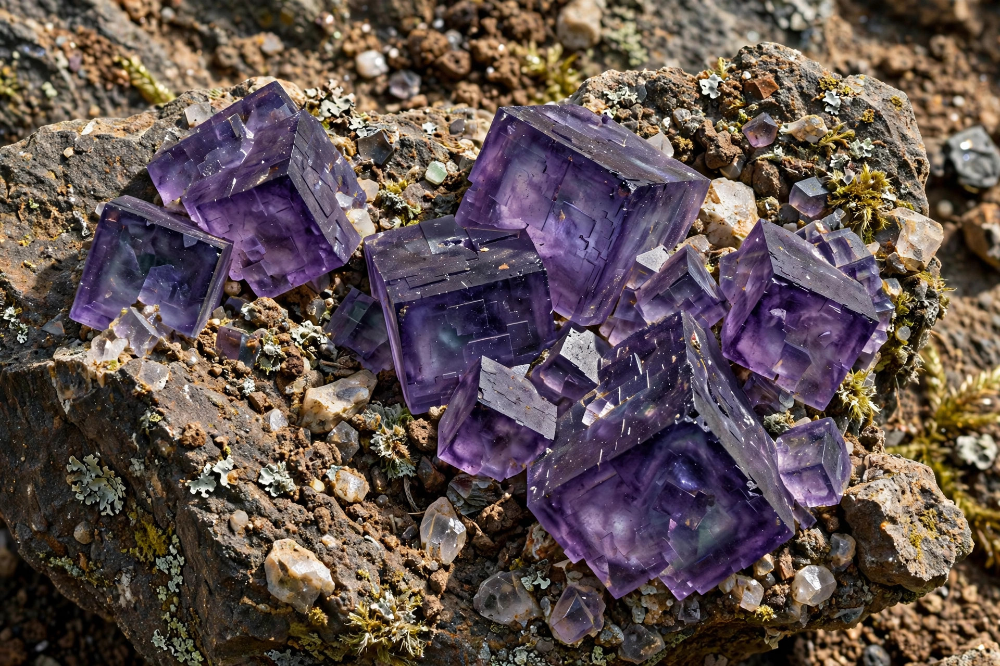

| Formula | CaF2 |
|---|---|
| Molar mass | 78.07 g/mol |
| Appearance | White solid (pure); coloured crystals as fluorite |
| Melting point | 1,418 °C |
Calcium fluoride is the inorganic compound with the formula CaF2. It is a white, highly insoluble ionic solid that occurs in nature as the mineral fluorite (also called fluorspar), often vividly coloured purple, green or yellow by impurities and radiation damage. The name of the element fluorine, and the phenomenon of fluorescence, both derive from fluorite.
Calcium fluoride adopts the fluorite structure, in which Ca2+ ions form a face-centred cubic lattice and F− ions occupy all the tetrahedral holes; many related compounds crystallise in the same or the inverse (antifluorite) arrangement. Its solubility in water is very low (Ksp ≈ 3.9 × 10−11).
Fluorite is the principal industrial source of fluorine: treating it with concentrated sulfuric acid yields hydrogen fluoride, the gateway to most organofluorine and inorganic fluorine compounds. Metallurgical-grade fluorite is used as a flux to lower melting points in steelmaking and iron smelting. Because pure calcium fluoride is transparent from the ultraviolet to the infrared and has a low refractive index, it is used for lenses, windows and prisms in UV optics, excimer lasers and telescopes, and as a component of some optical glasses.